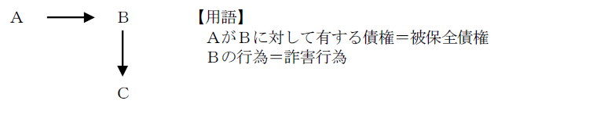
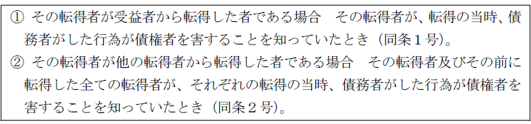
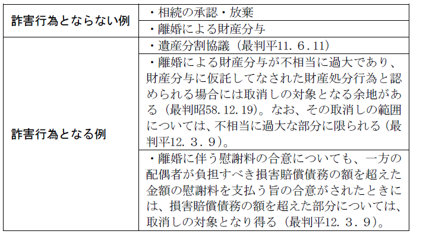
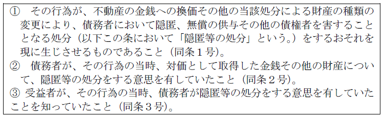
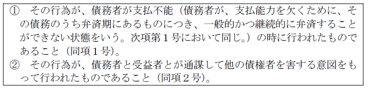
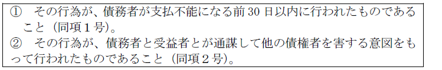
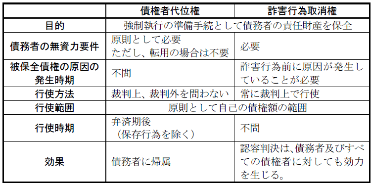

第４編 債権総論
第２章 責任財産の保全
第２節 詐害行為取消権（424条）
債権者は、債務者が債権者を害することを知ってした行為の取消しを裁判所に請求することができる（424条１項本文）。
ex．Ａにお金を借りているＢが、自分の唯一の財産である甲不動産をＣに贈与してしまった

1. 詐害行為取消請求権の一般的要件
詐害行為取消請求権の要件は、受益者に対する詐害行為取消請求権と、転得者に対する詐害行為取消請求権とに区別して規律されている（424条の５）。
受益者に対する詐害行為取消請求権の一般的要件は、以下のとおりである（424条）。
① 被保全債権が存在していたこと
② 被保全債権の発生原因が詐害行為前に生じたものであること
③ 債権者にとって自己の債権を保全する必要があること
④ 債務者が財産権を目的とする行為をしたこと
⑤ その行為が債権者を害するものであること
⑥ その行為が債権者を害するものであることを債務者が知っていたこと
⑦ 受益者が行為の時において債権者を害することを知っていたこと
2. 債権者の有する権利（被保全債権）の要件（上記①及び②）
(1) 被保全債権の発生原因
被保全債権の発生原因が、詐害行為前に生じていることが必要である（424条３項）。
(2) 対象となり得ない権利
(a) 強制執行によって実現することのできない債権（強制力を欠く債権）を被保全債権とする詐害行為取消請求権を行使することはできない（424条４項、最判平9.2.25）。
(b) 特定物債権であっても、その目的物を債務者が処分することにより無資力になったときには、特定物債権は損害賠償債権に転化するため、その処分行為を取り消すことができる（最大判昭36.7.19）。
ex．不動産の二重譲渡で、売主が無資力となった場合、登記を備えられなかった買主の売主に対する引渡請求権は、もう一方の買主への移転登記により履行不能となり、売主に対する損害賠償請求権に転化するため、詐害行為取消権を行使することができる。
※ 取消権を行使した買主は、自己に登記を移転することを請求できない（最判昭53.10.5）。
3. 債務者等の悪意（上記（1）⑥及び⑦）
(1) 債務者等の悪意
債務者及び受益者が、当該行為が行為の時に債権者を害することを知っていたこと（悪意）が必要である（424条1項）。
(2) 転得者に対する詐害行為取消請求
転得者に対する詐害行為取消請求権は、次の各号に掲げる区分に応じ、それぞれ当該各号に定める場合に限り、その転得者に対しても、詐害行為取消請求をすることができる（424条の5）。

1. 総説
424条で詐害行為該当性の判断にかかる一般的基準を規定し、424条の２以下で、債権者間の平等や、債務者にとっての行為の有用性を考慮すべき行為類型について424条の一般的基準を修正する特則規定を設けている。
2. 一般的基準
①債務者が無資力であること、②財産権を目的とする行為であることが必要である。
(1) 債務者が無資力であること
詐害行為時・取消権行使時の双方の時点で必要である。よって、取消権行使時に債務者の資力が回復していれば取消権行使はできない。
(2) 財産権を目的とする行為であること（424条２項）
単独行為（ex．債務免除）や合同行為（ex.会社設立）でもよい。身分行為は取消の対象とならないのが原則である。

3. 特則
(1) 相当の対価を得てした財産の処分行為の特則（424条の２）
(a) 意義
相当の対価を得てした財産の処分行為は、原則として詐害行為取消請求の対象とならず、例外的な場合に限り、詐害行為取消請求の対象となる。
相当の対価を得てした財産の処分を原則として詐害行為取消請求の対象とすると、取引の相手方を萎縮させ、経済的危機にある債務者から再建の機会を奪うおそれがあることなどが理由に挙げられる。
(b) 要件
相当対価処分は、次に掲げる要件のいずれにも該当する場合に限り、詐害行為取消請求の対象となる（424条の２）。

(2) 特定の債権者に対する担保の供与等の特則（424条の３）
(a) 意義
弁済その他の債務消滅行為は、原則として詐害行為取消請求の対象とはならず、例外的な場合に限り、詐害行為取消請求の対象となる。これは、責任財産を減少させる行為（責任財産減少行為）のみならず、特定の債権者を利する行為（偏頗行為）についても詐害行為取消請求の対象となりうることを認め、偏頗行為の観点から特則を定めるものである。
(b) 要件
債権者に対する本旨弁済その他の債務消滅行為は、次に掲げる要件のいずれにも該当する場合に限り、詐害行為取消請求の対象となる（424条の３第１項）。なお、本項の対象になるのは、同条２項の反対解釈から、義務的な行為に限られる。

また、債権者に対する非義務的な行為（代物弁済のように債務者の債務消滅行為が債務者の義務に属さない場合や、期限前弁済のようにその行為をした時点では債務者の義務に属さない場合）は、次に掲げる要件のいずれにも該当する場合に限り、詐害行為取消請求の対象となる（424条の３第２項）。

(3) 過大な代物弁済等の特則（424条の４）
(a) 意義
債務者の債務消滅行為が過大な場合において、424条の要件に該当するときには、424条の３の規定にかかわらず、債務消滅行為の過大な部分について詐害行為取消請求をすることができるとした。
その趣旨は、代物弁済は、それが過大な場合に詐害行為としての側面を持つとともに、偏頗行為としての側面を持つことから、過大な部分については、詐害行為としての側面から詐害行為取消請求を認める点にある。
なお、代物弁済等が424条の３第２項の要件に該当する場合には、代物弁済等が過大であるかにかかわらず、全体として詐害行為取消請求の対象となる。
(b) 要件
要件は、424条の要件を充足することに加えて、代物弁済等の債務消滅行為が「受益者の受けた給付の価額がその行為によって消滅した債務の額より過大である」ことである。
効果は、「その消滅した債務の額に相当する部分以外の部分」につき、詐害行為取消請求をすることができるということである。
1. 行使方法
詐害行為取消権は、裁判上で行使することを要する。
2. 被告及び訴訟告知（424条の７）
(1) 被告（424条の７第１項）
受益者に対する訴え：受益者
転得者に対する訴え：転得者
債務者を被告とする必要はない。これは、詐害行為取消請求訴訟の実体は、債務者の責任財産に関する争いであり、債務者に実質的な利害関係がないことが多く、債務者を被告とすることを強制する必要性が低く、訴訟告知を義務付けることで債務者の手続保障を確保することが可能であることを理由とするものである。
(2) 訴訟告知（424条の７第２項）
債権者は、詐害行為取消請求に係る訴えを提起したときは、遅滞なく、債務者に対し、訴訟告知をしなければならない（424条の７第２項）。
これは、債務者にも詐害行為取消請求を認容する確定判決の効力が及ぶ（425条）ことから、債務者に対する手続保障を確保する必要があることを理由とするものである。
3. 請求内容（424条の６）
(1) 債務者がした行為の取消し
(2) 財産の返還
債権者は、債務者がした行為の取消しとともに、その行為によって受益者又は転得者に移転した財産の返還を請求することができる（424条の６第１項前段、同条第２項前段）。
(3) 価格の償還
受益者又は転得者がその財産の返還をすることが困難であるときは、債権者は、その価額の償還を請求することができる（424条の６第１項後段、同条第２項後段）。
4. 債権者への支払い又は引渡し等
(1) 債権者への支払又は引渡し（424条の９）
債権者が、上記3.（2）又は（3）の請求によって金銭の支払い又は動産の引渡しを求めるときは、直接自己への支払い又は引渡しを求めることができる（424条の９第１項、同条第２項）
これによって、受益者又は転得者は、債務者に対して金銭支払又は動産引渡しをする必要がなくなる。これらの規定は、判例法理（大判大10.6.18等）を明文化するものである。
登記移転請求の場合は債務者の受領は不要なので、債務者名義にするよう請求できるにとどまる（最判昭53.10.５）。
(2) 事実上の優先権
取消債権者が債権の目的物と同一又は同種の物（特に金銭）を自己に直接引き渡させた場合、①詐害行為の相手方である受益者は、自己の債権に基づいて按分額の分配を要求する権利を有さず、また②取消債権者は他の債権者に分配する義務を有さない（最判昭37.10.９）。従って、自己の債権と債務者への引渡義務とを相殺することにより事実上優先弁済を受ける結果となる。
※ 取消債権者に事実上の優先弁済権を認めると、債権回収に努力した受益者である債権者との公平を害するとの批判がある。
5. 取消しの範囲
債権者は、詐害行為取消請求をする場合において、債務者がした行為の目的が可分であるときは、自己の債権の額の限度においてのみ、その行為の取消しを請求することができる（424条の８第１項）。
6. 詐害行為取消請求権の行使制限（426条）
以下の①又は②の期間を経過したときは、詐害行為取消請求に係る訴えを提起することができない（426条）。「提起することができない。」とあるため、出訴期間である。
① 債務者が債権者を害することを知って行為をしたことを債権者が知った時から２年を経過したとき
② 行為の時から10年を経過したとき
1. 認容判決の効力が及ぶ者の範囲（425条）
詐害行為取消請求を認容する確定判決の効力は、債務者及びそのすべての債権者に対しても効力を生じる（425条）。これは、被告でない債務者に対しても確定判決の効力が及ぶとしたものである。
2. 受益者に対する詐害行為取消請求の効果
(1) 債務者の受けた反対給付に関する受益者の権利（425条の２）
債務者の財産処分行為が取り消された場合、受益者は、債務者に対して以下のいずれかを請求できる。
① 反対給付の返還（現物返還）
② ①が困難であるときは、価額による返還
(2) 受益者の債権の回復（425条の３）
債務者がした債務の消滅行為が取り消され（424条の４の規定により取り消された場合を除く。）、受益者が債務者から受けた給付の返還又はその価額を償還したときは、受益者の債務者に対する債権が復活する（425条の３）。
3. 転得者に対する詐害行為取消請求の効果
転得者に対する債務者の行為が取り消されたときは、転得者は以下の権利行使ができる（425条の４）。
① 425条の２に規定する行為が取り消された場合
受益者の債務者に対する反対給付の返還請求権又は価額の償還請求権
② 債務者がした債務の消滅行為が取り消された場合
425条の３の規定により回復すべき受益者の債務者に対する債権
4. 被保全債権の時効更新の有無
取消債権者が受益者を相手として詐害行為取消しの訴えを提起しても、その被保全債権の消滅時効の更新・完成猶予の効力は生じない（最判昭37.10.12）。
【債権者代位権と詐害行為取消権の比較】
